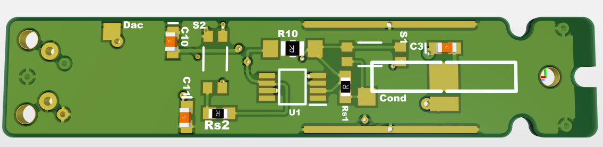
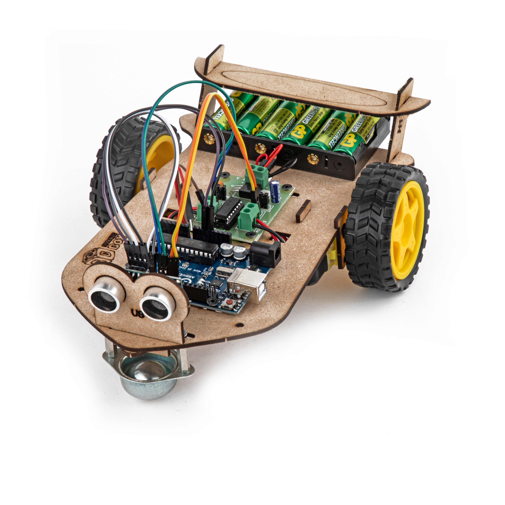
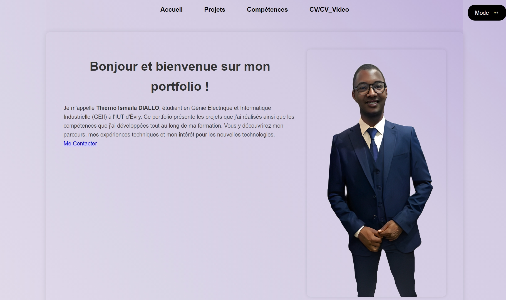

← Retour
Mes Projets
Conductive AFM

- Réaliser des mesures précises du courant sur des échantillons de matériaux pour analyser les propriétés électriques à une échelle microscopique.
- Mesurer des courants sur des échantillons de 60 microns.
Assurer la précision des mesures avec des sensibilités de 1 nA/V et 100 nA/V.
Utiliser un commutateur rapide géré par Arduino pour la sélection des sensibilités.
- Bruit : réduire le bruit généré par la résistance de rétroaction (R_f) et l’amplificateur opérationnel, crucial pour les courants très faibles.
Capacité parasite : éviter les oscillations en intégrant éventuellement une capacité en parallèle avec R_f.
- Conception d’un circuit transimpédance pour convertir le courant d'entrée en une tension proportionnelle.
Controleur température et magnétique

- Concevoir un contrôleur de température de champ magnétique avec régulation PID.
- Assemblage du contrôleur avec tous les modules : capteurs, chauffe-eau, Peltier et MLFM pour le champ magnétique.
- Test et validation du contrôleur.
Alimenation à decoupage

- L'objectif principal du projet était de réduire ces interférences électromagnétiques à un niveau minimal, garantissant ainsi un fonctionnement optimal des dispositifs électroniques. Cela était particulièrement crucial dans des environnements sensibles où même de petites quantités de bruit pouvaient compromettre la fiabilité des données.
- Pour réaliser ce projet, des modifications ont été apportées à la carte existante en y ajoutant un filtre LC.
- Dimensionnement des composants du circuit.
- Des tests rigoureux ont été effectués pour comparer les niveaux de bruit avant et après filtration.
Skateboard électrique
- L'objectif du projet est de motoriser un skateboard mécanique.
- Étude et dimensionnement des composants du skateboard : moteur, batterie et code embarqué.
- Réalisation des tests afin de valider le dimensionnement des composants.
Robot autonome

- L'objectif du projet est de concevoir un robot autonome capable de se déplacer dans un milieu confiné et de récupérer des informations grâce aux capteurs qui lui sont intégrés.
- Conception du châssis du robot sur SketchUp.
- Conception de la partie électronique et programmation du robot.
- Tests et validation des fonctions du robot.
Portfolio

- Création d'un site internet pour mon portfolio.
- Mise en place d'une maquette du site sur Figma.
- Programmation du site web.
- Hébergement du site web.